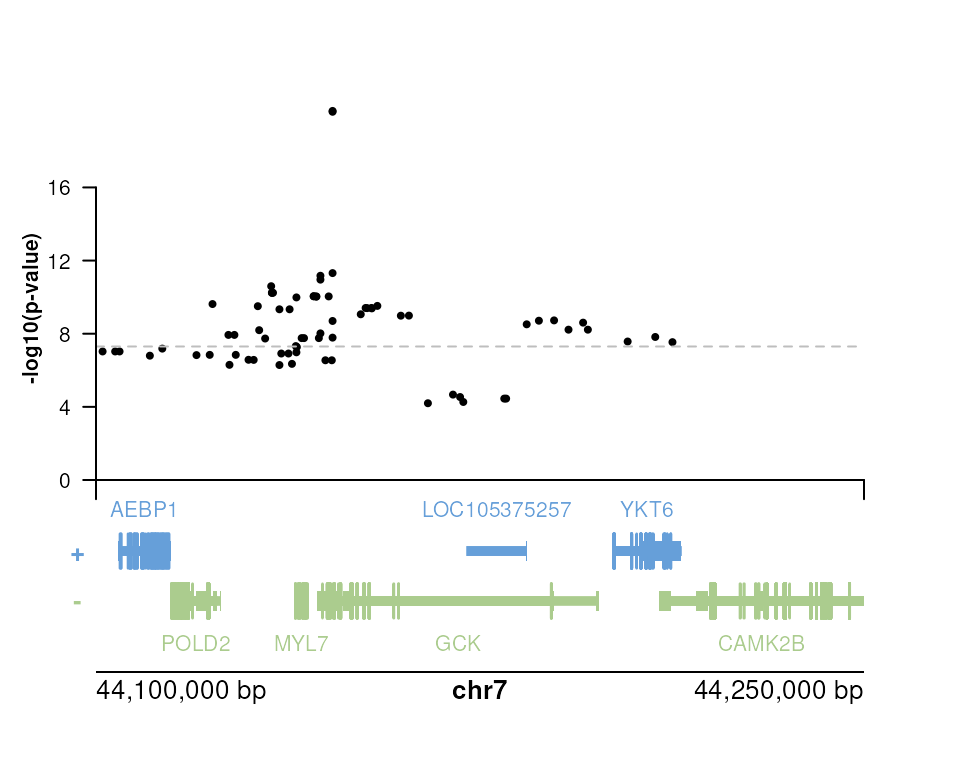

IGVF background
The Impact of Genomic Variation on Function (IGVF) Consortium,
aims to understand how genomic variation affects genome function, which in turn impacts phenotype. The NHGRI is funding this collaborative program that brings together teams of investigators who will use state-of-the-art experimental and computational approaches to model, predict, characterize and map genome function, how genome function shapes phenotype, and how these processes are affected by genomic variation. These joint efforts will produce a catalog of the impact of genomic variants on genome function and phenotypes.
The IGVF Catalog described in the last sentence is available
through a number of interfaces, including a web interface as well as two
programmatic interfaces. In addition, there is a Data Portal,
where raw and processed data can be downloaded, with its own web interface and client library for
R. This package, rigvf, focuses on the Catalog and
not the Data Portal.
Knowledge graph of variant function
The IGVF Catalog is a form of knowledge graph, where the nodes are biological entities such as variants, genes, pathways, etc. and edges are relationships between such nodes, e.g. empirically measured effects of variants on cis-regulatory elements (CREs) or on transcripts and proteins. These edges may have metadata including information about cell type context and information about how the association was measured, e.g. which experiment or predictive model.
The rigvf package
This package provides access to some of the IGVF Catalog from within R/Bioconductor. Currently, limited functionality is implemented, with priority towards applications and integration with Bioconductor functionality. However, the source code and internal functions can also be used to build one-off querying functions.
Data license
For IGVF Catalog data license, see the IGVF policy page.
Catalog API
The IGVF Catalog offers two programmatic interfaces, the Catalog API and an ArangoDb interface, described further below. The Catalog API is preferred, with optimized queries of relevant information. Queries are simple REST requests implemented using the httr2 package. Here we query variants associated with “GCK”; one could also use, e.g., Ensembl identifiers.
library(rigvf)
gene_variants(gene_name = "GCK")
#> # A tibble: 25 × 12
#> sequence_variant gene study label log10pvalue effect_size method source
#> <chr> <chr> <chr> <chr> <dbl> <list> <list> <chr>
#> 1 variants/NC_000007.1… gene… stud… spli… 9.06 <NULL> <NULL> EBI e…
#> 2 variants/NC_000007.1… gene… stud… eQTL 7.93 <NULL> <NULL> EBI e…
#> 3 variants/NC_000007.1… gene… stud… eQTL 6.93 <NULL> <NULL> EBI e…
#> 4 variants/NC_000007.1… gene… stud… eQTL 8.22 <NULL> <NULL> EBI e…
#> 5 variants/NC_000007.1… gene… stud… eQTL 6.92 <NULL> <NULL> EBI e…
#> 6 variants/NC_000007.1… gene… stud… eQTL 7.54 <NULL> <NULL> EBI e…
#> 7 variants/NC_000007.1… gene… stud… spli… 9.39 <NULL> <NULL> EBI e…
#> 8 variants/NC_000007.1… gene… stud… eQTL 10.2 <NULL> <NULL> EBI e…
#> 9 variants/NC_000007.1… gene… stud… eQTL 7.03 <NULL> <NULL> EBI e…
#> 10 variants/NC_000007.1… gene… stud… eQTL 4.45 <NULL> <NULL> EBI e…
#> # ℹ 15 more rows
#> # ℹ 4 more variables: source_url <chr>, biological_context <chr>, chr <list>,
#> # name <chr>Note that we only receive a limited number of responses. We can
change both the page of responses we receive and the
limit per page:
gene_variants(gene_name = "GCK", page=1L)
#> # A tibble: 25 × 12
#> sequence_variant gene study label log10pvalue effect_size method source
#> <chr> <chr> <chr> <chr> <dbl> <list> <list> <chr>
#> 1 variants/NC_000007.1… gene… stud… eQTL 10.0 <NULL> <NULL> EBI e…
#> 2 variants/NC_000007.1… gene… stud… eQTL 7.74 <NULL> <NULL> EBI e…
#> 3 variants/NC_000007.1… gene… stud… eQTL 20.2 <NULL> <NULL> EBI e…
#> 4 variants/NC_000007.1… gene… stud… eQTL 11.0 <NULL> <NULL> EBI e…
#> 5 variants/NC_000007.1… gene… stud… eQTL 11.3 <NULL> <NULL> EBI e…
#> 6 variants/NC_000007.1… gene… stud… eQTL 7.32 <NULL> <NULL> EBI e…
#> 7 variants/NC_000007.1… gene… stud… eQTL 9.62 <NULL> <NULL> EBI e…
#> 8 variants/NC_000007.1… gene… stud… eQTL 6.35 <NULL> <NULL> EBI e…
#> 9 variants/NC_000007.1… gene… stud… eQTL 6.57 <NULL> <NULL> EBI e…
#> 10 variants/NC_000007.1… gene… stud… spli… 9.40 <NULL> <NULL> EBI e…
#> # ℹ 15 more rows
#> # ℹ 4 more variables: source_url <chr>, biological_context <chr>, chr <list>,
#> # name <chr>
gene_variants(gene_name = "GCK", limit=50L)
#> # A tibble: 50 × 12
#> sequence_variant gene study label log10pvalue effect_size method source
#> <chr> <chr> <chr> <chr> <dbl> <list> <list> <chr>
#> 1 variants/NC_000007.1… gene… stud… spli… 9.06 <NULL> <NULL> EBI e…
#> 2 variants/NC_000007.1… gene… stud… eQTL 7.93 <NULL> <NULL> EBI e…
#> 3 variants/NC_000007.1… gene… stud… eQTL 6.93 <NULL> <NULL> EBI e…
#> 4 variants/NC_000007.1… gene… stud… eQTL 8.22 <NULL> <NULL> EBI e…
#> 5 variants/NC_000007.1… gene… stud… eQTL 6.92 <NULL> <NULL> EBI e…
#> 6 variants/NC_000007.1… gene… stud… eQTL 7.54 <NULL> <NULL> EBI e…
#> 7 variants/NC_000007.1… gene… stud… spli… 9.39 <NULL> <NULL> EBI e…
#> 8 variants/NC_000007.1… gene… stud… eQTL 10.2 <NULL> <NULL> EBI e…
#> 9 variants/NC_000007.1… gene… stud… eQTL 7.03 <NULL> <NULL> EBI e…
#> 10 variants/NC_000007.1… gene… stud… eQTL 4.45 <NULL> <NULL> EBI e…
#> # ℹ 40 more rows
#> # ℹ 4 more variables: source_url <chr>, biological_context <chr>, chr <list>,
#> # name <chr>We can also pass thresholds on the negative log10 p-value or the
effect size, using the following letter combinations,
gt (>), gte (>=), lt (<), lte (<=), followed by
a : and a value. See examples below:
gene_variants(gene_name = "GCK", log10pvalue="gt:5.0")
#> # A tibble: 25 × 12
#> sequence_variant gene study label log10pvalue effect_size method source
#> <chr> <chr> <chr> <chr> <dbl> <list> <list> <chr>
#> 1 variants/NC_000007.1… gene… stud… spli… 9.06 <NULL> <NULL> EBI e…
#> 2 variants/NC_000007.1… gene… stud… eQTL 7.93 <NULL> <NULL> EBI e…
#> 3 variants/NC_000007.1… gene… stud… eQTL 6.93 <NULL> <NULL> EBI e…
#> 4 variants/NC_000007.1… gene… stud… eQTL 8.22 <NULL> <NULL> EBI e…
#> 5 variants/NC_000007.1… gene… stud… eQTL 6.92 <NULL> <NULL> EBI e…
#> 6 variants/NC_000007.1… gene… stud… eQTL 7.54 <NULL> <NULL> EBI e…
#> 7 variants/NC_000007.1… gene… stud… spli… 9.39 <NULL> <NULL> EBI e…
#> 8 variants/NC_000007.1… gene… stud… eQTL 10.2 <NULL> <NULL> EBI e…
#> 9 variants/NC_000007.1… gene… stud… eQTL 7.03 <NULL> <NULL> EBI e…
#> 10 variants/NC_000007.1… gene… stud… eQTL 6.55 <NULL> <NULL> EBI e…
#> # ℹ 15 more rows
#> # ℹ 4 more variables: source_url <chr>, biological_context <chr>, chr <list>,
#> # name <chr>
gene_variants(gene_name = "GCK", effect_size="gt:0.5")
#> # A tibble: 0 × 0The help page ?catalog_queries outlines other available
user-facing functions.
Note that nested columns in the response can be widen-ed using tidyr. For example, when querying genomic elements that are associated with a gene, we get back nested output:
res <- gene_elements(gene_id = "ENSG00000187961", verbose = TRUE)
res
#> # A tibble: 1 × 2
#> gene elements
#> <list> <list>
#> 1 <named list [5]> <list [25]>
res |>
tidyr::unnest_longer(elements) |>
tidyr::unnest_wider(elements)
#> # A tibble: 25 × 14
#> gene id cell_type score model dataset element_type element_chr
#> <list> <chr> <chr> <lgl> <chr> <chr> <chr> <chr>
#> 1 <named list [5]> geno… CD8-posi… NA IGVF https:… tested elem… chr1
#> 2 <named list [5]> geno… CD8-posi… NA IGVF https:… tested elem… chr1
#> 3 <named list [5]> geno… CD8-posi… NA IGVF https:… tested elem… chr1
#> 4 <named list [5]> geno… CD8-posi… NA IGVF https:… tested elem… chr1
#> 5 <named list [5]> geno… CD8-posi… NA IGVF https:… tested elem… chr1
#> 6 <named list [5]> geno… CD8-posi… NA IGVF https:… tested elem… chr1
#> 7 <named list [5]> geno… CD8-posi… NA IGVF https:… tested elem… chr1
#> 8 <named list [5]> geno… CD8-posi… NA IGVF https:… tested elem… chr1
#> 9 <named list [5]> geno… CD8-posi… NA IGVF https:… tested elem… chr10
#> 10 <named list [5]> geno… CD8-posi… NA IGVF https:… tested elem… chr10
#> # ℹ 15 more rows
#> # ℹ 6 more variables: element_start <int>, element_end <int>, name <chr>,
#> # method <chr>, class <chr>, files_filesets <chr>GRanges-based queries
The functions elements() and
element_genes() take GRanges input ranges, and
elements() provides back the response as GRanges.
Note that IGVF uses hg38 and USCS-style chromosome names, e.g.,
chr1.
ArangoDB API
The ArangoDB API provides flexibility but requires greater understanding of Arango Query Language and the database schema. Documentation is available in the database under the ‘Support’ menu item ‘REST API’ tab using username ‘guest’ and password ‘guestigvfcatalog’.
The following directly queries the database for variants of an Ensembl gene id.
db_gene_variants("ENSG00000106633", threshold = 0.85)
#> # A tibble: 82 × 31
#> `_key` `_id` `_from` `_to` `_rev` biological_context biological_process study
#> <chr> <chr> <chr> <chr> <chr> <chr> <chr> <chr>
#> 1 4d57e… vari… varian… gene… _kqEy… ontology_terms/UB… ontology_terms/GO… stud…
#> 2 ed83d… vari… varian… gene… _kqEy… ontology_terms/UB… ontology_terms/GO… stud…
#> 3 6b383… vari… varian… gene… _kqEy… ontology_terms/UB… ontology_terms/GO… stud…
#> 4 ee07e… vari… varian… gene… _kqEy… ontology_terms/UB… ontology_terms/GO… stud…
#> 5 9ecd9… vari… varian… gene… _kqEy… ontology_terms/UB… ontology_terms/GO… stud…
#> 6 cb382… vari… varian… gene… _kqE5… ontology_terms/UB… ontology_terms/GO… stud…
#> 7 1ae95… vari… varian… gene… _kqE5… ontology_terms/UB… ontology_terms/GO… stud…
#> 8 d2855… vari… varian… gene… _kqE5… ontology_terms/UB… ontology_terms/GO… stud…
#> 9 800da… vari… varian… gene… _kqE5… ontology_terms/UB… ontology_terms/GO… stud…
#> 10 3e45d… vari… varian… gene… _kqE5… ontology_terms/UB… ontology_terms/GO… stud…
#> # ℹ 72 more rows
#> # ℹ 23 more variables: simple_sample_summaries <list>, label <chr>,
#> # source <chr>, source_url <chr>, name <chr>, inverse_name <chr>,
#> # molecular_trait_id <chr>, gene_id <chr>, credible_set_id <chr>,
#> # variant_chromosome_position_ref_alt <chr>, rsid <chr>,
#> # credible_set_size <int>, posterior_inclusion_probability <dbl>,
#> # p_value <dbl>, log10pvalue <dbl>, beta <dbl>, standard_error <dbl>, …The AQL is
aql <- system.file(package = "rigvf", "aql", "gene_variants.aql")
readLines(aql) |> noquote()
#> [1] FOR l IN variants_genes
#> [2] FILTER l._to == @geneid
#> [3] FILTER l.`log10pvalue` > @threshold
#> [4] RETURN lThe help page ?db_queries outlines other available
user-facing functions. See ?arango for more
developer-oriented information.
Use with Bioconductor
Compute overlap with plyranges
We can query genomic elements using elements() and then
compute overlaps with the plyranges package as below. See the
plyranges package
documentation for more examples.
library(plyranges)
library(tibble)
rng <- data.frame(seqnames="chr1", start=10e6+1, end=10.1e6) |>
as_granges()
e <- elements(rng, limit=200L) |>
filter(source != "ENCODE_EpiRaction")
e
#> GRanges object with 200 ranges and 5 metadata columns:
#> seqnames ranges strand | name
#> <Rle> <IRanges> <Rle> | <character>
#> [1] chr1 10001018-10001351 * | EH38E1317660
#> [2] chr1 10001823-10002161 * | EH38E3954141
#> [3] chr1 10002812-10003022 * | EH38E3954142
#> [4] chr1 10006462-10006688 * | EH38E3954143
#> [5] chr1 10007231-10007550 * | EH38E2785201
#> ... ... ... ... . ...
#> [196] chr1 10000983-10001482 * | genic_chr1_10000982_..
#> [197] chr1 10000983-10001482 * | genic_chr1_10000982_..
#> [198] chr1 10000983-10001482 * | genic_chr1_10000982_..
#> [199] chr1 10000983-10001482 * | genic_chr1_10000982_..
#> [200] chr1 10000983-10001482 * | genic_chr1_10000982_..
#> source_annotation type source
#> <character> <character> <character>
#> [1] dELS: distal Enhance.. candidate cis regula.. ENCODE
#> [2] TF: TF binding candidate cis regula.. ENCODE
#> [3] dELS: distal Enhance.. candidate cis regula.. ENCODE
#> [4] CA: chromatin access.. candidate cis regula.. ENCODE
#> [5] dELS: distal Enhance.. candidate cis regula.. ENCODE
#> ... ... ... ...
#> [196] genic accessible dna eleme.. ENCODE
#> [197] genic accessible dna eleme.. ENCODE
#> [198] genic accessible dna eleme.. ENCODE
#> [199] genic accessible dna eleme.. ENCODE
#> [200] genic accessible dna eleme.. ENCODE
#> source_url
#> <character>
#> [1] https://www.encodepr..
#> [2] https://www.encodepr..
#> [3] https://www.encodepr..
#> [4] https://www.encodepr..
#> [5] https://www.encodepr..
#> ... ...
#> [196] https://www.encodepr..
#> [197] https://www.encodepr..
#> [198] https://www.encodepr..
#> [199] https://www.encodepr..
#> [200] https://www.encodepr..
#> -------
#> seqinfo: 1 sequence from hg38 genome; no seqlengths
tiles <- tile_ranges(rng, width=10e3) %>%
select(-partition) %>%
mutate(id = letters[seq_along(.)])
# count overlaps of central basepair of elements in tiles
e |>
anchor_center() |>
mutate(width = 1) |>
join_overlap_left(tiles) |>
tibble::as_tibble() |>
dplyr::count(id)
#> # A tibble: 10 × 2
#> id n
#> <chr> <int>
#> 1 a 100
#> 2 b 13
#> 3 c 10
#> 4 d 15
#> 5 e 11
#> 6 f 15
#> 7 g 12
#> 8 h 12
#> 9 i 7
#> 10 j 5Plot variants with plotgardener
Below we show a simple example of plotting variants and elements in a gene context, using the plotgardener package.
First selecting some variants around the gene GCK (reminder
that we only obtain the first limit number of variants, see
?catalog_queries for more details).
# up to 200 variants:
v <- gene_variants(gene_name = "GCK", limit=200L, verbose=TRUE) |>
dplyr::select(-c(gene, chr, source, source_url)) |>
tidyr::unnest_wider(sequence_variant) |>
dplyr::rename(seqnames = chr) |>
dplyr::mutate(start = pos + 1, end = pos + 1) |>
as_granges()We then load plotgardener and define some default parameters.
library(plotgardener)
par <- pgParams(
chrom = "chr7",
chromstart = 44.1e6,
chromend = 44.25e6,
assembly = "hg38",
just = c("left", "bottom")
)Renaming some columns:
v_for_plot <- v |>
select(snp = rsid, p = log10pvalue, effect_size)To match with the correct gene annotation, we could explicitly define
the transcript database using plotgardener::assembly(),
where we would provide a database built by running
GenomicFeatures::makeTxDbFromGFF() on a GENCODE GTF file.
Here we use one of the standard hg38 TxDb with UCSC-style chromosome
names.
library(TxDb.Hsapiens.UCSC.hg38.knownGene)
#> Loading required package: GenomicFeatures
#> Loading required package: AnnotationDbi
#> Loading required package: Biobase
#> Welcome to Bioconductor
#>
#> Vignettes contain introductory material; view with
#> 'browseVignettes()'. To cite Bioconductor, see
#> 'citation("Biobase")', and for packages 'citation("pkgname")'.
#>
#> Attaching package: 'AnnotationDbi'
#> The following object is masked from 'package:dplyr':
#>
#> select
library(org.Hs.eg.db)
#> Below we build the page and populate it with annotation from the TxDb used by plotgardener and from IGVF Catalog.
pageCreate(width = 5, height = 4, showGuides = FALSE)
plotGenes(
params = par, x = 0.5, y = 3.5, width = 4, height = 1
)
#> genes[genes1]
plotGenomeLabel(
params = par,
x = 0.5, y = 3.5, length = 4,
just = c("left", "top")
)
#> genomeLabel[genomeLabel1]
mplot <- plotManhattan(
params = par, x = 0.5, y = 2.5, width = 4, height = 2,
v_for_plot, trans = "",
sigVal = -log10(5e-8), sigLine = TRUE, col = "grey", lty = 2
)
#> manhattan[manhattan1]
annoYaxis(
plot = mplot, at=0:4 * 4, axisLine = TRUE, fontsize = 8
)
#> yaxis[yaxis1]
annoXaxis(
plot = mplot, axisLine = TRUE, label = FALSE
)
#> xaxis[xaxis1]
plotText(
params = par,
label = "-log10(p-value)", x = 0.2, y = 2, rot = 90,
fontsize = 8, fontface = "bold",
default.units = "inches"
)
#> text[text1]Session info
sessionInfo()
#> R Under development (unstable) (2026-01-25 r89330)
#> Platform: x86_64-pc-linux-gnu
#> Running under: Ubuntu 24.04.3 LTS
#>
#> Matrix products: default
#> BLAS: /usr/lib/x86_64-linux-gnu/openblas-pthread/libblas.so.3
#> LAPACK: /usr/lib/x86_64-linux-gnu/openblas-pthread/libopenblasp-r0.3.26.so; LAPACK version 3.12.0
#>
#> locale:
#> [1] LC_CTYPE=en_US.UTF-8 LC_NUMERIC=C
#> [3] LC_TIME=en_US.UTF-8 LC_COLLATE=en_US.UTF-8
#> [5] LC_MONETARY=en_US.UTF-8 LC_MESSAGES=en_US.UTF-8
#> [7] LC_PAPER=en_US.UTF-8 LC_NAME=C
#> [9] LC_ADDRESS=C LC_TELEPHONE=C
#> [11] LC_MEASUREMENT=en_US.UTF-8 LC_IDENTIFICATION=C
#>
#> time zone: UTC
#> tzcode source: system (glibc)
#>
#> attached base packages:
#> [1] stats4 stats graphics grDevices utils datasets methods
#> [8] base
#>
#> other attached packages:
#> [1] org.Hs.eg.db_3.22.0
#> [2] TxDb.Hsapiens.UCSC.hg38.knownGene_3.22.0
#> [3] GenomicFeatures_1.63.1
#> [4] AnnotationDbi_1.73.0
#> [5] Biobase_2.71.0
#> [6] plotgardener_1.17.0
#> [7] tibble_3.3.1
#> [8] plyranges_1.31.1
#> [9] dplyr_1.1.4
#> [10] GenomicRanges_1.63.1
#> [11] Seqinfo_1.1.0
#> [12] IRanges_2.45.0
#> [13] S4Vectors_0.49.0
#> [14] BiocGenerics_0.57.0
#> [15] generics_0.1.4
#> [16] rigvf_1.3.6
#>
#> loaded via a namespace (and not attached):
#> [1] tidyselect_1.2.1 blob_1.3.0
#> [3] farver_2.1.2 Biostrings_2.79.4
#> [5] S7_0.2.1 bitops_1.0-9
#> [7] fastmap_1.2.0 RCurl_1.98-1.17
#> [9] GenomicAlignments_1.47.0 XML_3.99-0.20
#> [11] digest_0.6.39 lifecycle_1.0.5
#> [13] KEGGREST_1.51.1 RSQLite_2.4.5
#> [15] magrittr_2.0.4 compiler_4.6.0
#> [17] rlang_1.1.7 sass_0.4.10
#> [19] tools_4.6.0 utf8_1.2.6
#> [21] yaml_2.3.12 data.table_1.18.0
#> [23] rtracklayer_1.71.3 knitr_1.51
#> [25] S4Arrays_1.11.1 htmlwidgets_1.6.4
#> [27] bit_4.6.0 curl_7.0.0
#> [29] DelayedArray_0.37.0 RColorBrewer_1.1-3
#> [31] abind_1.4-8 BiocParallel_1.45.0
#> [33] withr_3.0.2 purrr_1.2.1
#> [35] desc_1.4.3 grid_4.6.0
#> [37] Rhdf5lib_1.33.0 ggplot2_4.0.1
#> [39] scales_1.4.0 SummarizedExperiment_1.41.0
#> [41] cli_3.6.5 rmarkdown_2.30
#> [43] crayon_1.5.3 ragg_1.5.0
#> [45] otel_0.2.0 httr_1.4.7
#> [47] rjson_0.2.23 DBI_1.2.3
#> [49] cachem_1.1.0 rhdf5_2.55.12
#> [51] parallel_4.6.0 ggplotify_0.1.3
#> [53] XVector_0.51.0 restfulr_0.0.16
#> [55] matrixStats_1.5.0 vctrs_0.7.1
#> [57] yulab.utils_0.2.3 Matrix_1.7-4
#> [59] jsonlite_2.0.0 gridGraphics_0.5-1
#> [61] bit64_4.6.0-1 systemfonts_1.3.1
#> [63] strawr_0.0.92 tidyr_1.3.2
#> [65] jquerylib_0.1.4 glue_1.8.0
#> [67] pkgdown_2.2.0.9000 codetools_0.2-20
#> [69] gtable_0.3.6 GenomeInfoDb_1.47.2
#> [71] BiocIO_1.21.0 UCSC.utils_1.7.1
#> [73] pillar_1.11.1 rhdf5filters_1.23.3
#> [75] rappdirs_0.3.4 htmltools_0.5.9
#> [77] R6_2.6.1 httr2_1.2.2
#> [79] textshaping_1.0.4 evaluate_1.0.5
#> [81] lattice_0.22-7 png_0.1-8
#> [83] Rsamtools_2.27.0 cigarillo_1.1.0
#> [85] memoise_2.0.1 bslib_0.10.0
#> [87] rjsoncons_1.3.2 Rcpp_1.1.1
#> [89] SparseArray_1.11.10 whisker_0.4.1
#> [91] xfun_0.56 fs_1.6.6
#> [93] MatrixGenerics_1.23.0 pkgconfig_2.0.3